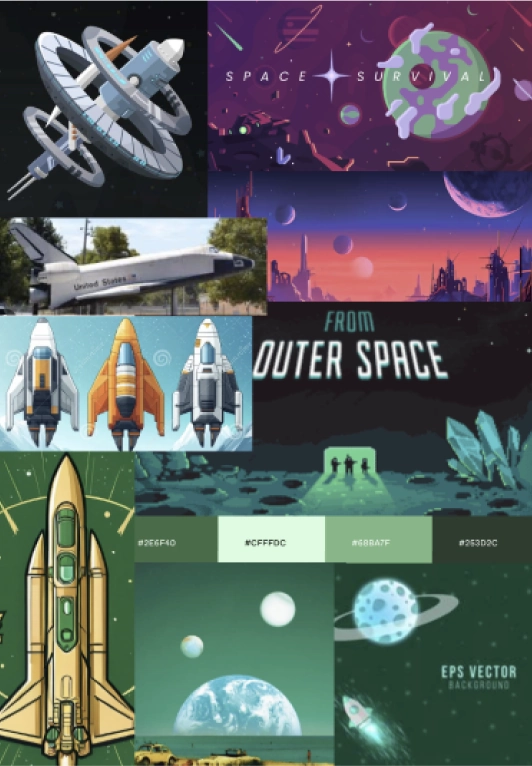
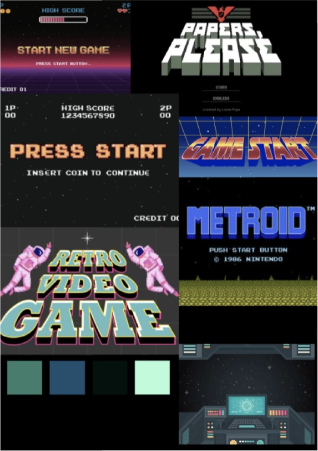
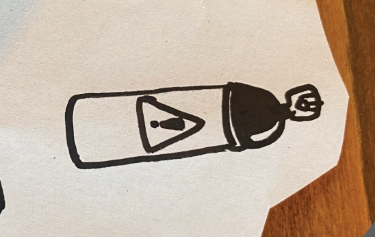
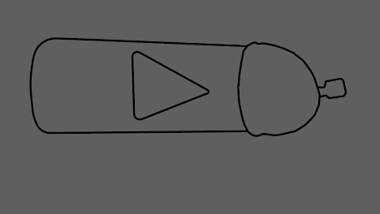
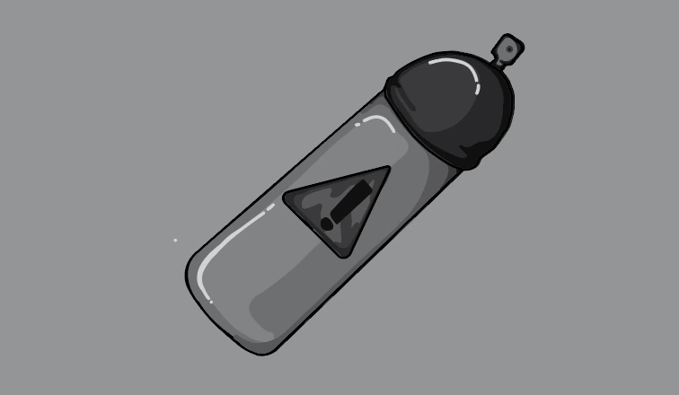

ANNIMA-
TION
Annimation Tema
Dette temas største introduktion var javascribt, som vi skulle lære at bruge og forstå. Dette skulle vi
bruge til at
skabe vores eget spil også ved hjælp af css styling.
Vi skulle ligesom lave et spil fra bunden, så vi blev derfor også introduceret til svg design på
illustrator.
Vi blev introduceret til nye designkonventioner og stilarter. Vi arbejde med nye værktøjer som statemachine
diagrammer
og aktivitetsdiagrammer, som var med til at give overblik over spilets kerne funktioner og elementer.
PROCESS


Jeg vidste fra starten af hvad jeg ville lave spillet om, det skulle være et rum spil, hvor man skulle skyde
rumskrald.
Jeg lavede en brainstorm om hvad det dårlige ellement skulle være i spillet, som førte mig frem til en
bombe. Derefter
lavede jeg moodbords for at finde frem til den æstetik og stil jeg ville ramme.
jeg fandt frem til at jeg ville lave hele mit spil ud fra en farve, min yndlings farve grøn. Jeg fandt frem
til to
værdi-ord jeg ville prøve at ramme i silen. og det var retro og simpel.
derefter gik jeg igang med at skitse, hvor jeg brugte crazy8 metoden, for at finde frem til det helt rigtige
design af
baggrund og rumskib. derefter lavede jeg skitser af alle svg ellementer og rentegnede dem i illustrator.
SVG'ER


